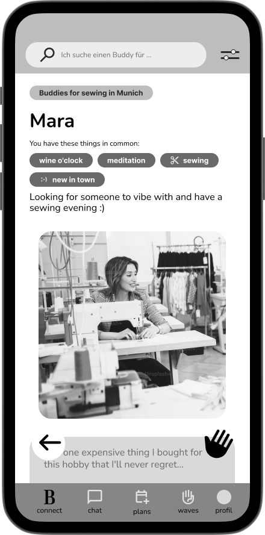
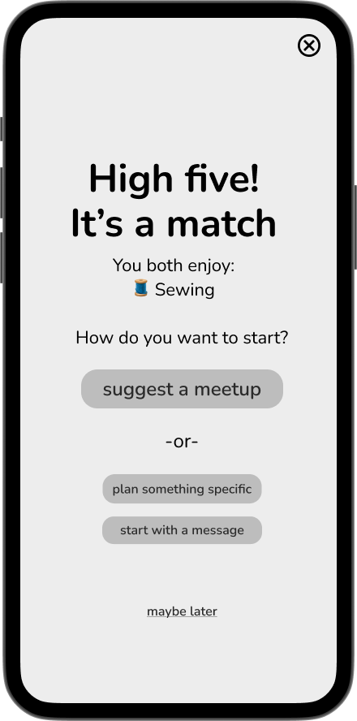
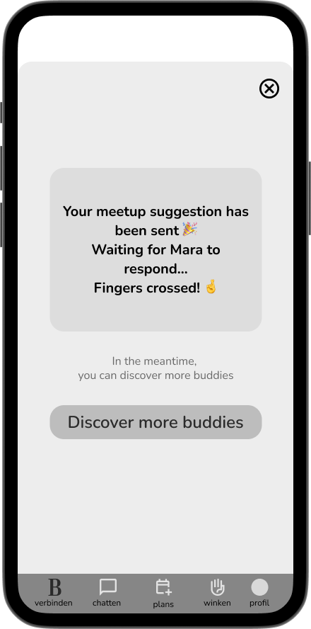
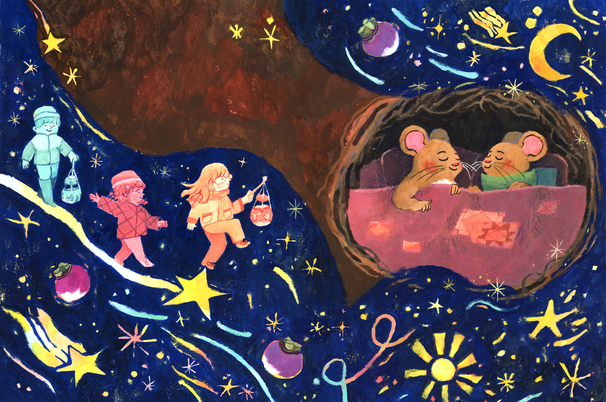

Selected Work
Projects & Process



UX Research
Product Design
Buddy First
Designing how connections move from matching to real interaction.

Feature Design
Rewards Feature: Team App
UX concept for a product agency in Amsterdam.

Infographic Design
Senior Presentation Designer: Statista
Translating complex data into clear, accessible visuals.

Visual Sketchnotes
Visual Sketchnotes: Live Visualisation
Capturing ideas live through drawing, symbols, and text.

Illustration
Children's Book
Wim & Frida Räbeliechtli
Picture book published by Baschlin Verlag, September 2025.